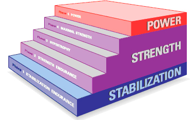

First, a personal trainer must be certified by a valid certifying agency. The agency that I recommend is the National Academy of Sports Science. NASM, for short, offers an extensive six month course. At the end of the course you must pass a test and be CPR/AED certified in order to obtain a personal training license. Once a personal trainer is granted his/her license there are many fundamentals and rules he/she must follow. The first rule is to train for the right reasons. A personal trainer must want to help people reach their fitness goals more than anything else. The second fundamental is to use terminology that clients can comprehend. The third rule is to lead by example, show them how exercises are correctly performed. The fourth rule is to keep them motivated and on track while at the same time keeping them informed about their nutrition. Finally, a personal trainer must keep their fitness in a healthy state, so that they can lead by example. As well as, they must constantly be furthering their education on the subject to provide new and relevant techniques for their clients to utilize in order to keep their fitness a priority.
The OPT Model is the model that I follow to make sure that my clients develop all the skills to train. It is a model that starts everyone at a beginner level and depending on how athletic and fit they are is what will decide how fast they progress through this program. The OPT Model is the follwing:
Below I will include a picture of the OPT Model that way you can better understand the way it builds upon itself. It's kind of like a food pyramind:

The answer to that question is yes. Cardio respiratory training is imperative in any training program that my clients participate in. There are tons of benefits to cardio respiratory training. A few of these benefits are:
| Training Time | Monday | Tuesday | Wednesday | Thursday | Friday |
|---|---|---|---|---|---|
| 6:00 a.m. | Chest | Back | Legs | Chest | Back |
| 10:00 a.m. | Triceps | Biceps | Shoulders | Triceps | Biceps |
| 4:00 p.m. | Jog 30 minutes | Sprints, 20 minutes | Rest | Jog 30 minutes | Sprints, 20 minutes |
| 10:00 p.m. | Sleep | Sleep | Sleep | Sleep | Sleep |
The answer to this question is yes I do need to practice what I preach. But, I am now an experienced fitness instructor. I have been lifting for over seven years. I have completed the OPT Model and I have decided to entertain myself with other styles of training. I do a chest and tricep day, back and bicep day, and leg and shoulders day. This is called a split. A split is when you train seperate large muscle groups on different days. You can see my training schedule in the table below: I always stretch before every single workout. I also stretch before I go to bed and right when I wake up in the morning. Stretching is imperative for a person to stay healthy. Click this link to see my stretching routine.